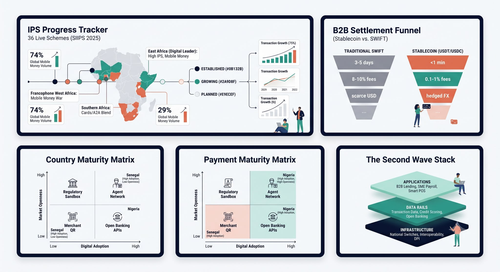

African Payments Insights is a digital publication dedicated to ground-level fintech intelligence across the continent's payment rails — no fluff, no hype, just raw infrastructure analysis for founders, investors, and operators.
We track three pillars: the hard infrastructure connecting banks, wallets, and switches; the merchant and B2B software digitizing Africa's cash economy; and the cross-border rails — from PAPSS to stablecoins — replacing slow, expensive correspondent banking.

Advisory services
Beyond our editorial coverage, we work directly with operators and investors through:
- Custom research — bespoke market and competitive landscape reports.
- Speaking engagements — briefings for teams and conferences on African payment infrastructure.
- Corporate sponsorships — partner with our newsletter and content pillars.
Reach out via hello@africanpaymentsinsights.com to start a conversation.